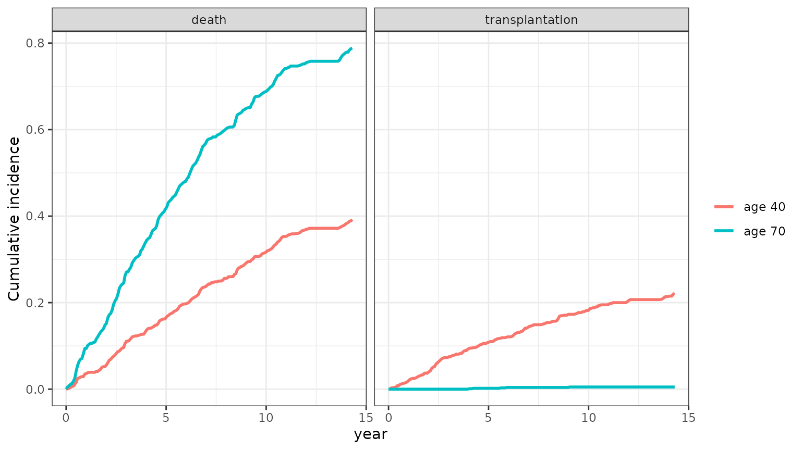

A patient’s digital twin is a model of that patient that is
updated as their data arrive and can be run forward to show how they may
fare. For longitudinal clinical data, the twin has to forecast two
things together: how the patient’s biomarkers will evolve, and when an
event (and which event) will happen. The backward joint model does both,
and simulateTrajectory() turns a fitted model into a twin:
it draws complete futures for a patient, conditional on everything
measured so far.
| A digital twin needs | In BJM |
|---|---|
| a model of the individual patient | the joint model with the patient’s random effects |
| to be synchronized with new data | conditioning on the history up to prediction_time
|
| to forecast the patient’s state | draws of future biomarker values and of the event time and type |
| to quantify uncertainty | many draws per patient (n_sim) |
| to describe patients not seen yet | a patient with no measurements is drawn from their covariates alone |
This article shows four uses on the pbc3 data: a twin
that is updated at each visit, questions answered from the twin’s draws,
virtual patients, and twins as a prognostic covariate in a randomized
trial. The twin is a statistical, predictive model: it forecasts
outcomes as observed in the data it was fit on, and is not a mechanistic
or causal model of the disease.
We fit the sub-models as in vignette("BJM-intro"): a Cox
model for death or transplantation (status3), a logistic
model for which of the two occurred (status4: 0 death, 1
transplantation), and serum bilirubin (serBilir, log scale)
and albumin as biomarkers.
survival_fit_all <- survivalSub(
pbc3[!duplicated(pbc3$id), ],
form_marginal_surv = Surv(years, status3) ~ age + sex,
form_conditional_cr = status4 ~ years + age + sex
)
long_sub_fixed <- list(
"serBilir" = serBilir ~ year + age + sex + years + years * year,
"albumin" = albumin ~ year + age + sex + years + years * year
)
long_sub_random <- list("serBilir" = ~ year | id, "albumin" = ~ year | id)
long_fit_all <- longitudinalSub(pbc3[pbc3$status3 == 1, ], long_sub_fixed, long_sub_random)
trans <- survivalTrans(c(1, 3, 5, 7))A twin that is updated at each visit
Patient 2 was followed for 14 years. We build their twin three times,
at years 1, 3 and 5, each time from the measurements taken so far, and
draw 500 futures over the next five years. The event time and type are
set to NA: at each of these times they are not known
yet.
patient <- pbc3[pbc3$id == 2, ]
twin_at <- function(landmark) {
history <- patient[patient$year <= landmark, ]
history$years <- NA
history$status4 <- NA
sims <- simulateTrajectory(history, long_fit_all, survival_fit_all,
prediction_time = landmark,
times = seq(landmark, landmark + 5, by = 0.25),
time_variable = "year",
trans$survival_variable_all, trans$survival_trans_function,
n_sim = 500, seed = 1)
sims$landmark <- landmark
as.data.frame(sims)
}
twins <- do.call(rbind, lapply(c(1, 3, 5), twin_at))simulateTrajectory() returns one row per draw and time,
so any summary is a few lines of ordinary R. Each draw’s event time is
repeated on all of its rows; keeping the first row of each draw gives
one row per future. The twin’s risk of an event within three years grows
as the patient’s bilirubin rises:
futures <- twins[!duplicated(twins[c("landmark", "sim")]), ]
aggregate(cbind(risk_3_years = event == 1 & event_time <= landmark + 3) ~ landmark,
data = futures, FUN = mean)
#> landmark risk_3_years
#> 1 1 0.036
#> 2 3 0.102
#> 3 5 0.212The forecast bilirubin, with every measurement the patient actually had. Filled points are the ones the twin was built from; open points were measured later, and show how the twin’s forecasts compare with what happened.
bands <- aggregate(serBilir ~ landmark + year, data = twins,
FUN = function(v) quantile(v, c(0.05, 0.5, 0.95)))
bands <- do.call(data.frame, bands)
names(bands)[3:5] <- c("lower", "median", "upper")
measured <- merge(patient[c("year", "serBilir")], data.frame(landmark = c(1, 3, 5)))
measured$used <- ifelse(measured$year <= measured$landmark, "used by the twin", "measured later")
ggplot(bands, aes(x = year)) +
geom_ribbon(aes(ymin = lower, ymax = upper), fill = "#2166AC", alpha = 0.2) +
geom_line(aes(y = median), color = "#2166AC", linewidth = 1) +
geom_point(data = measured, aes(y = serBilir, shape = used), size = 2) +
scale_shape_manual(values = c("used by the twin" = 16, "measured later" = 1), name = NULL) +
geom_vline(aes(xintercept = landmark), linetype = "dashed", color = "grey50") +
facet_wrap(~ landmark, labeller = label_both) +
ylab("serBilir") + theme_bw() + theme(legend.position = "bottom")![Forecast bilirubin of patient 2 from twins built at years 1, 3 and 5, one panel each, as a median line and 90% band over the following five years, with the patient's actual measurements as points, filled if the twin used them and open if they were measured later. The twin built at year 1 forecasts a slow rise, and the later measurements lie in the upper half of its band; the twins built at years 3 and 5 forecast steeper rises that follow the later measurements closely, with bands that start narrower.](digital-twins_files/figure-html/updating-plot-1.png)
plot(sims) and plot(sims, which = "event")
draw a single twin directly; see Plotting with
BJM.
Asking the twin questions
Because the twin is a set of draws rather than a few summary numbers, it answers questions no single prediction function was written for. Using the twin built at year 5:
at5 <- twins[twins$landmark == 5, ]
futures5 <- at5[!duplicated(at5$sim), ]
# median time to death or transplantation, among the futures with an event
# within follow-up
median(futures5$event_time[futures5$event == 1])
#> [1] 9.253643
# probability of being event-free at year 8 with bilirubin above 2
# (serBilir is on the log scale, so this is above about 7.4 mg/dL)
mean(sapply(split(at5, at5$sim), function(d) {
at8 <- d[d$year == 8, ]
!is.na(at8$serBilir) && at8$serBilir > 2
}))
#> [1] 0.18
# probability that albumin falls below 2.8 before any event, within 3 years
mean(sapply(split(at5, at5$sim), function(d) {
window <- d[d$year <= 8 & !is.na(d$albumin), ]
any(window$albumin < 2.8)
}))
#> [1] 0.708Virtual patients
A twin can also be built for a patient who has not been measured at
all, from baseline covariates alone, with the biomarkers set to
NA. Here two virtual patients, aged 40 and 70, otherwise
alike.
virtual <- data.frame(id = c("age 40", "age 70"), year = 0, age = c(40, 70), sex = 1,
serBilir = NA, albumin = NA)
virtual_sims <- simulateTrajectory(virtual, long_fit_all, survival_fit_all,
prediction_time = 0, times = 0:10, time_variable = "year",
trans$survival_variable_all, trans$survival_trans_function,
n_sim = 1000, seed = 1)
virtual_futures <- virtual_sims[!duplicated(virtual_sims[c("id", "sim")]), ]
aggregate(cbind(death_5_years = event == 1 & status4 == 0 & event_time <= 5,
transplant_5_years = event == 1 & status4 == 1 & event_time <= 5,
event_free_14_years = event == 0) ~ id,
data = virtual_futures, FUN = mean)
#> id death_5_years transplant_5_years event_free_14_years
#> 1 age 40 0.167 0.109 0.387
#> 2 age 70 0.420 0.002 0.207The cumulative incidence of each event type, computed from the draws:
grid <- seq(0, attr(virtual_sims, "max_event_time"), length.out = 200)
incidence <- do.call(rbind, lapply(split(virtual_futures, virtual_futures$id), function(d) {
do.call(rbind, lapply(c(death = 0, transplantation = 1), function(type) {
data.frame(id = d$id[1], time = grid,
event = if (type == 0) "death" else "transplantation",
incidence = vapply(grid, function(t)
mean(d$event == 1 & d$status4 == type & d$event_time <= t), numeric(1)))
}))
}))
ggplot(incidence, aes(x = time, y = incidence, color = id)) +
geom_line(linewidth = 1) +
facet_wrap(~ event) +
labs(x = "year", y = "Cumulative incidence", color = NULL) +
theme_bw()
The difference between the two reflects how age is associated with
the outcomes in pbc3; it is not the effect of being older,
and a virtual patient is only as realistic as the covariates it is
given. To build a synthetic cohort, give each virtual patient covariates
resampled from the population of interest, as in Plotting with BJM.
Twins in a randomized trial
pbc3 comes from a randomized trial of D-penicillamine
against placebo (drug). A common use of digital twins in
trials is to predict each participant’s outcome from their baseline
data, and to adjust the treatment comparison for that prediction, which
reduces the variance of the estimated treatment effect without biasing
it, since the prediction uses only data from before randomization (the
idea behind PROCOVA).
The outcome here is bilirubin at the visit near year 2, for the 220
participants who had one. Each participant’s twin is built from their
baseline measurements alone (the event time is unknown at baseline), and
its prediction is the mean of 200 draws of their bilirubin at year 2.
With truncate = FALSE the draws are not cut off at the
drawn event time, so the prediction is of the biomarker itself rather
than of it among the draws still event-free.
visit_2y <- pbc3[pbc3$year > 1.5 & pbc3$year < 2.5, ]
visit_2y <- visit_2y[!duplicated(visit_2y$id), c("id", "drug", "serBilir")]
names(visit_2y)[3] <- "serBilir_2y"
baseline <- pbc3[pbc3$year == 0 & pbc3$id %in% visit_2y$id, ]
baseline$years <- NA
baseline$status3 <- NA
baseline$status4 <- NA
trial_twins <- simulateTrajectory(baseline, long_fit_all, survival_fit_all,
prediction_time = 0, times = 2, time_variable = "year",
trans$survival_variable_all, trans$survival_trans_function,
n_sim = 200, truncate = FALSE, seed = 1)
prognosis <- aggregate(cbind(twin_serBilir = serBilir) ~ id, data = trial_twins, FUN = mean)
trial <- merge(visit_2y, prognosis, by = "id")
cor(trial$twin_serBilir, trial$serBilir_2y)
#> [1] 0.8127169The treatment effect on bilirubin at year 2, without and with the twin’s prediction as a covariate:
unadjusted <- lm(serBilir_2y ~ drug, data = trial)
adjusted <- lm(serBilir_2y ~ drug + twin_serBilir, data = trial)
rbind(unadjusted = coef(summary(unadjusted))["drugD-penicil", ],
twin_adjusted = coef(summary(adjusted))["drugD-penicil", ])
#> Estimate Std. Error t value Pr(>|t|)
#> unadjusted -0.03056175 0.15509068 -0.1970573 0.8439663
#> twin_adjusted -0.07962104 0.09045106 -0.8802666 0.3796888
# sample size the unadjusted analysis would need for the same precision,
# relative to the trial's
(coef(summary(unadjusted))["drugD-penicil", "Std. Error"] /
coef(summary(adjusted))["drugD-penicil", "Std. Error"])^2
#> [1] 2.939978Both analyses agree that D-penicillamine has no clear effect on bilirubin, as the trial found; the adjusted one estimates it with a much smaller standard error, which in a new trial would translate into fewer patients for the same power. Two caveats apply to this illustration:
- The twins here were fit on the same
pbc3data, including the trial’s outcomes. In practice the model is fit on historical data, such as earlier trials or registries, and frozen before the trial starts. - Most of the gain here comes from baseline bilirubin, which the twin carries forward; adjusting for it directly gives a similar standard error. A twin earns its keep when it combines many baseline biomarkers and covariates, measured irregularly, into one prediction.
What the twin assumes
The twin inherits the assumptions of the fitted model, and adds a few
of its own (see ?simulateTrajectory for details):
- Fixed parameters. The draws use the estimated parameters as if they were known, so the spread of the futures reflects differences between patients and measurement error, not uncertainty in the estimates.
-
Follow-up limits. Event times after the last
follow-up time of the data (
max_event_time) are reported as event-free through it, rather than extrapolated. - Carried-forward covariates. Future biomarker values use each covariate’s last value.
- Who the longitudinal model describes. The longitudinal sub-model is fit on patients with an event, so it describes trajectories leading to an event; a twin of a patient who will be event-free for a long time is approximated by one whose event comes at the end of follow-up.